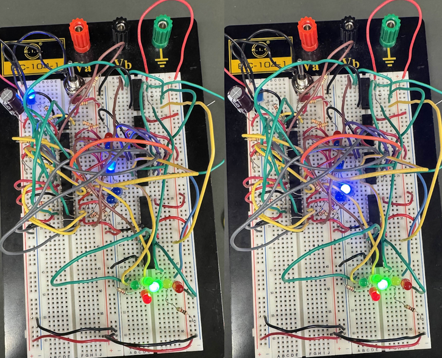

Hi I'm Daffry I do STEM and I think I'm pretty OK at it. 
these are the breadboards from my digital logic lab. one of my favorite circuits I've worked on.
Basically it's a finite state machine that cycles through 6 states after a button is pressed. Debugging it was a massive pain but seeing it working was so amazing
I'm not really one for doing personal projects but I figure a website is really just the least I could do.
Right now, I am ECE CS and Math major. But I'm more or less interested in a little bit of everything, not just what I'm majoring in.
This website is mostly going to be inactive probably but I have motivation so I'm going to work on it until it runs out